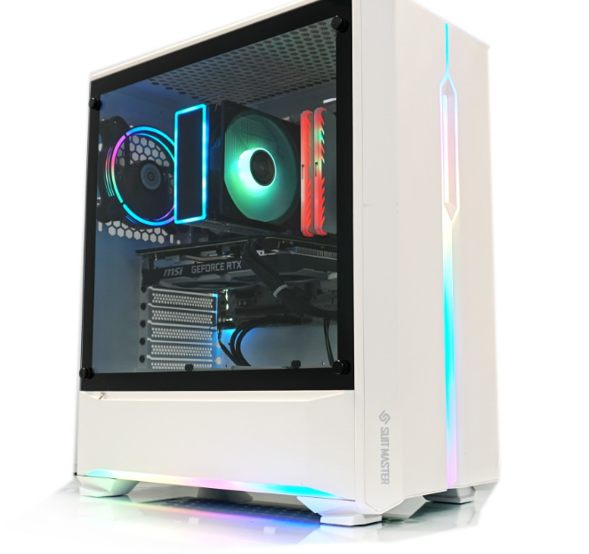
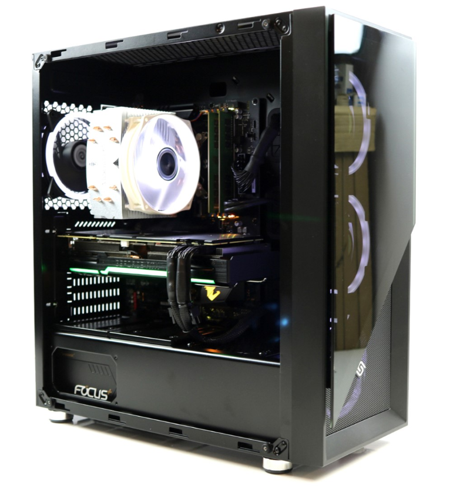

| 컴퓨터 이름 | 부품 소개 | 특징 설명 | 사진 |
|---|---|---|---|
| 게이밍 컴퓨터 | CPU : INTEL CORE 17 9700K M/B : MSI B360M 박격포 티타늄 메모리 : 삼성 DDR4 16GB SSD : 마이크론 MX500 500GB VGA : MSI벤투스 RTX2070 8GB CASE : ABKO 31OR 아이리스 파워 : 마이크로닉스 정격 700W 튜닝파츠 : CR-601쿨러+ NC1 방열판X2EA | 현재 출시된 모든 게임을 풀옵션으로 플레이 가능하며, 방송 및 영상 편집도 빠르게 가능한 성능이므로 방송용 게이밍 컴퓨터에도 적합한 컴퓨터이다. |  |
| 3D 영상편집용 컴퓨터 | CPU : INTEL CORE i9-9900k GIGABYTE Z390 AORUS ELITE 메모리 : 삼성 DDR4 PC4-21300 16G*2EA 32GB 삼성 970EVO NVMe 500G SSD 도시바 3TB 이엠텍 지포스 RTX 2080 블랙 몬스터 시소닉 FOCUS 750W 80PLUS GOLD 슈트마스터 361G 칼리스토 블랙 써모랩 트리니티 화이트 LED | 프리미어 프로,애프터 이펙트,마야를 이용하여 고화질 영상에 특수효과, 모션그래픽 등의 편집 작업이 가능하고, 고화질 4K 영상 프리뷰부터 빠른 렌더링 성능으로 작업이 가능한 3D영상편집용 컴퓨터이다. |  |